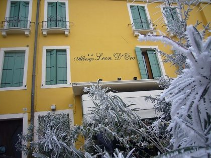

Quattro generazioni
L'albergo Leon d'Oro è nato agli inizi del Novecento vicino a Porta Vecchia, la storica porta della città. Allora era il punto d'arrivo per chi veniva a Este lungo il fiume.
Oggi lo gestisce la quarta generazione della famiglia Rubini. Per noi l'ospitalità è un valore da tramandare, come le ricette.
Siamo a due passi dal centro e dal Castello Carrarese, ai piedi dei Colli Euganei. Da qui partono le gite a piedi, in bici e in mountain bike.
In cucina facciamo i piatti veneti senza rivisitazioni: il musso con polenta, il baccalà alla vicentina, i bigoli alla boscaiola.
Famiglia RubiniAlbergo Ristorante Leon d'Oro